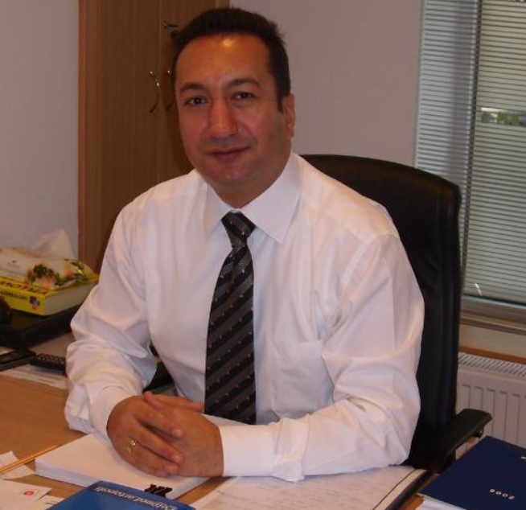

Yusuf Sevinc
2256 Stone Glen Cres
Oakville, Ontario, L6M 0C8
Mobile: 905.580.18.84
E-mail:yusufsevinc@yahoo.com
LinkedIn: www.linkedin.com/in/yusufsevinc/
PROFESSIONAL HIGHLIGHTS
Mastered banking specialist with over10 yearsof sales experience in retail and commercial banking,
having ability to build strong professional and profitable relationship with customers. Extensive
knowledge of portfolio and risk management ; presented strong mathematical skills with the ability
to demonstrated high level of performance with ratios . Knowledge of advanced investing,credit coach ability
processes and analysis. Able to build rapport and effective communicator. Strong leader and great
and effective language skills in Turkish and Azerbaijani. Basic communication skills in German.
EXPERIENCE
YapiKredi Bank Azerbaijan JSC - Azerbaijan ( www.yapikredi.com.az/en/)
Retail & Commercial Banking- Branch Manager/ Sales Manager 2007 – 2017
- Achieved customer service, administration issue and diversified sales among client’s accounts
in accordance with the bank's objectives and customers’ demand.
- Developed and retained relationship with existing customers through active management of
portfolios and ensured solutions continually met customer’s need as well as exceeded customer
expectation in terms of speed, efficiency and professionalism.
- Evaluated and analyzed financial statements and developed forecast, financial objectives and
business plan.
- Planned and monitored customer’s comprehensive plans, using a holistic and client focused
approach to help them to accomplish their goals.
- Preserved and developed a portfolio of retail banking clients by proactively focusing new
business opportunities. Maximized clients’ satisfaction by achieving their financial needs at the
highest level.
- Ensured credit decisions and recommendations in accordance with Bank’s lending process and
regulations.
- Accomplished all income and volume targets 6 years in a row. After devaluations in 2015 and
2016, risk management and collection were the priority and succeeded rate was over 70 %.
- Utilized over CAD 200 million long-term project financing loan in various projects between
2010 – 2015.
Yapi ve Kredi Bankasi A.S. (Kocbank A.S.) - Sakarya / Turkey (www.yapikredi.com.tr/en/)
Retail & Commercial Banking – Branch Manager/ Sales Manager 2003 – 2007
- Accomplished sales and revenues target, prepared branch budget and financial reporting,
mentored and supervised staff.
- Attracted new customers by understanding their financial needs, located the best solution and
delivered high standards of service quality.
- Met customer expectation on their daily base bank transactions.
- Sales and business development.
- Processed and end customers loan demands
- Increased clients base by 2.000 new clients and successfully accomplished all budget targets
year over year.
LICENCE
Investment Funds in Canada (IFC), Canadian Securities Institute 2019
PROFESSIONAL DEVELOPMENT
- Financial Management- Online Certification 2019
- Diploma in Business Management & Entrepreneurship- Online Certification 2017
- Bank Management Course- Bank Training Center,Azerbaijan 2010
- Project of Credit Diploma, UCI UniCredit Management & Banking Academy,Turkey 2004
- Credit Excellence Diploma, UCI UniCredit Management & Banking Academy,Turkey 2004
OTHER SEMINARS & COURSES
- High Level of Sales Technics
- Portfolio Management
- Financial Analysis
- Credit Evaluation on SME
- Money Markets & Risk Management
- Financial Mathematics
- Creating High Quality Team
- Spirit of Teamwork
- Time Management
- Leadership
- Self Development
EDUCATION
Master (M.Phil) Degree in Public Finance & Expenditure-Dundee University, Scotland, UK
Bachelor of Science (BSc) Degree in Public Finance -Hacettepe University, Ankara, Turkey
SOFT SKILLS
Excellent Communication, Leadership, Problem Solving, Negotiate and Conflict Resolution,
Confidence, Flexibility, Decisiveness, Relationship Building, Business Analysis, Collaboration,
Multitasking Ability.